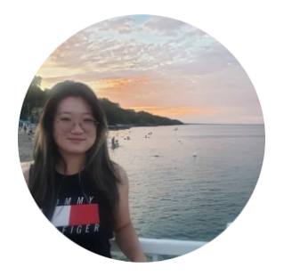

I want to help people with mobility impairments walk. At IHMC, I'm working toward that by building wireless IMU motion-capture systems and state estimators for bipedal robots — the sensor and control foundations that make exoskeletons and rehabilitation devices possible.
Four-sensor wireless system that tracks lower-limb joint angles in real time at 330 Hz. ESP32 + MPU9250 nodes stream orientation over WiFi/UDP to a live MuJoCo skeletal model computing hip, knee, and ankle angles.
Real-time SE₂(3)-based InEKF fusing IMU, joint encoders, and contact constraints for bipedal locomotion on the ALEX V2 humanoid. Includes a Python replay pipeline for 1 kHz walking data validation.
Automated anatomical landmark detection from 3D CT surface models for subtalar joint analysis in ankle osteoarthritis patients. Reusable pipeline using curvature analysis and surface extrema.
Compared three algorithms — Triangle, 2D Trapezoidal, and 3D Trapezoidal — for reducing motion-capture data while preserving trajectory fidelity. Triangle method removed 82% of points with minimal error.
Built a Unity VR environment with HTC Vive Pro and Leap Motion to study hand coordination during grasping. Recorded gait data with motion capture and pressure plates to compare walking in VR vs. real environments.
Developed a web-based GUI for real-time robot control via ROS/rosbridge WebSockets, and built a Raspberry Pi facial recognition system with OpenCV. 12th place at the 2026 University Rover Challenge.
Designed an airless tire in SolidWorks using the Fill Boundary pattern, 3D-printed in TPU, and validated through compressive testing against traditional pneumatic tires.
Designed a microfluidic device for rapid separation and electrochemical detection of E. coli O157:H7 using immunomagnetic beads. Improved productivity 17% and reduced costs 30%.
I'm pursuing PhD opportunities in rehabilitation engineering, biomechanics, and wearable sensing. I'd love to connect about research or collaboration.